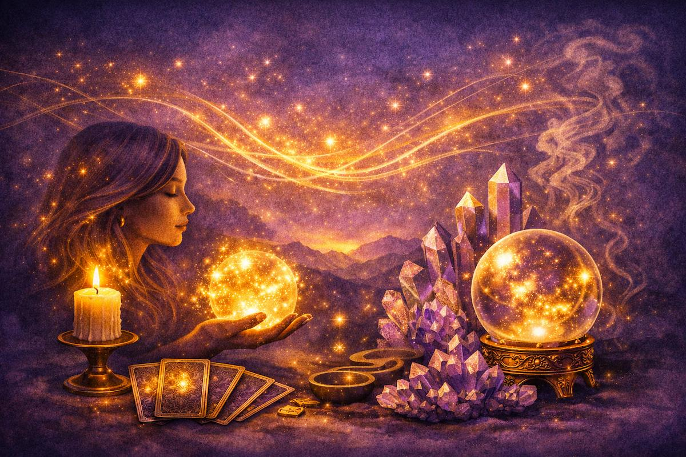

Основы магии

Этот раздел посвящён фундаментальным принципам энергии, интуиции, вибраций и внутреннего состояния человека. Здесь вы узнаете, как работает магия на тонком уровне, почему намерение так важно и как эмоции влияют на вашу реальность.
Энергия
Энергия — это основа всех магических и духовных практик. Она присутствует во всём: в мыслях, эмоциях, действиях, словах и даже в пространстве вокруг нас. Понимание энергии помогает лучше чувствовать себя, других людей и происходящие события.
Работа с энергией включает:
- осознание своих эмоций и состояний;
- умение управлять внутренним потоком;
- очищение от негативных влияний;
- настройку на гармонию и спокойствие;
- создание сильного энергетического поля.
Интуиция
Интуиция — это внутренний голос, который помогает принимать решения, чувствовать людей и ситуации, понимать скрытые процессы. Она работает мягко, но точно, и её можно развивать через практику и наблюдение.
Интуиция усиливается, когда человек:
- находится в спокойном состоянии;
- доверяет своим ощущениям;
- умеет слушать тело и эмоции;
- практикует медитации и осознанность;
- не подавляет свои чувства.
Вибрации
Вибрации — это частоты, на которых работает наша энергия. Высокие вибрации связаны с радостью, любовью, вдохновением и спокойствием. Низкие — с тревогой, страхом, усталостью и негативом.
Повышение вибраций помогает:
- улучшить эмоциональное состояние;
- привлечь позитивные события;
- усилить интуицию;
- улучшить качество жизни;
- создать гармонию внутри и вокруг.
Намерение
Намерение — это направление вашей энергии. Это не просто желание, а чёткое внутреннее решение, которое задаёт вектор движения. Магия работает там, где есть ясность, фокус и искренность.
Сильное намерение:
- создаёт энергетический импульс;
- помогает материализовать желания;
- усиливает ритуалы и практики;
- даёт внутреннюю опору;
- помогает принимать решения.